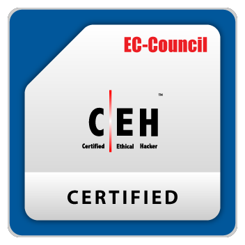
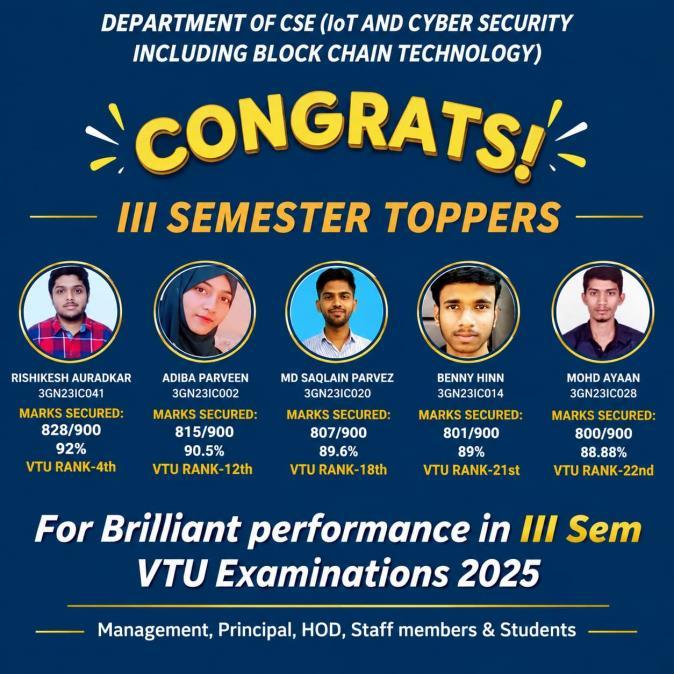
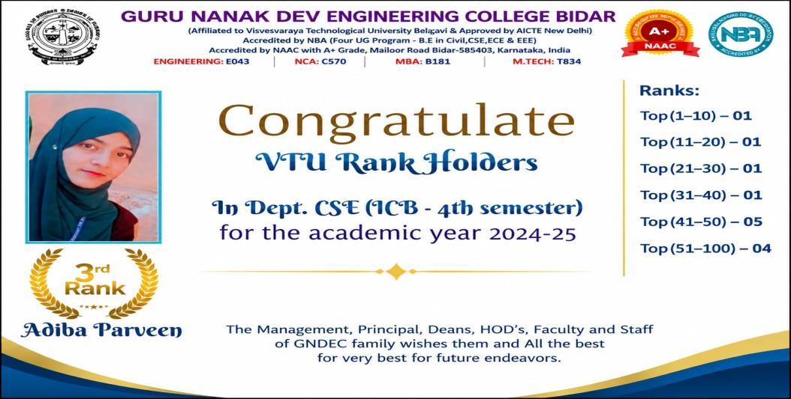
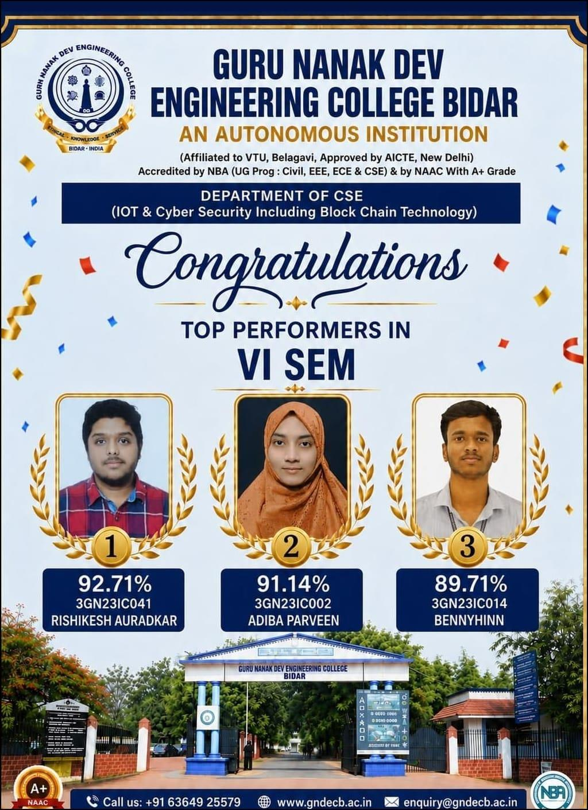
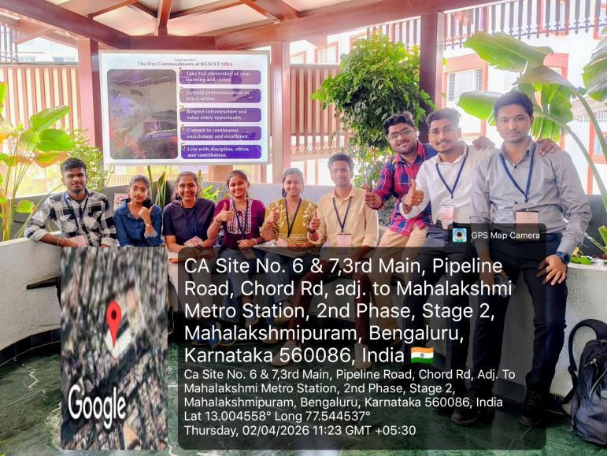
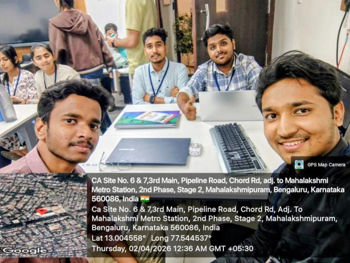
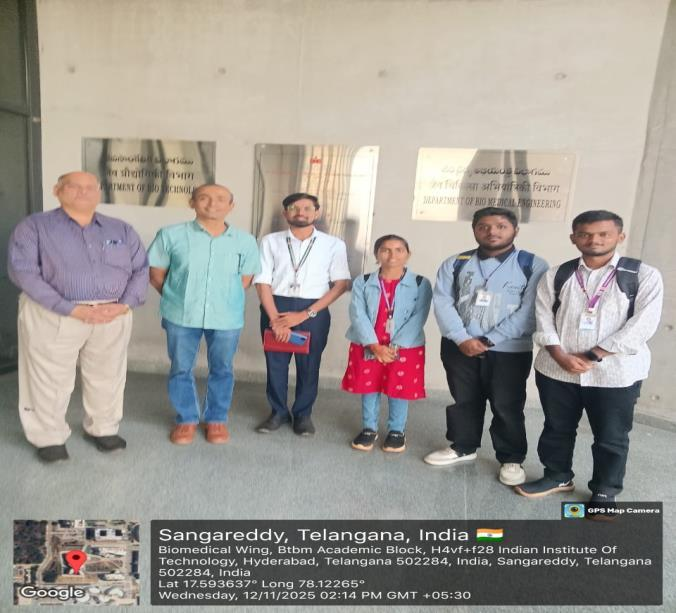
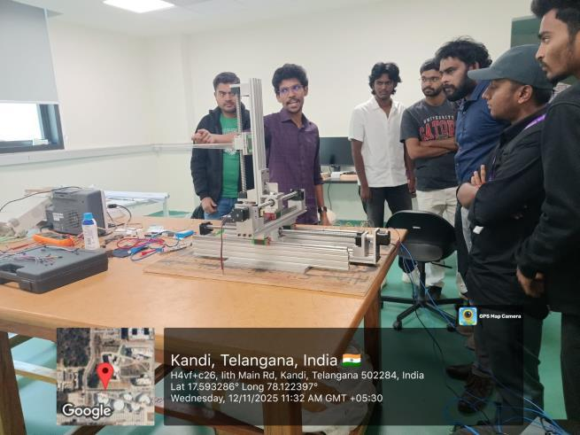
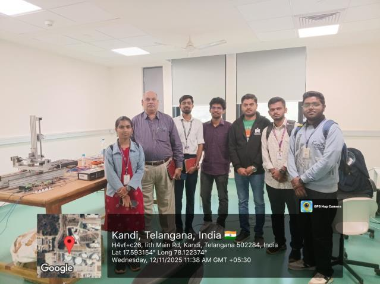

Filter Department Achievements & Milestones
1. 31 Students Certified as Ethical Hackers – EC-Council CEH
A major achievement of the Department of CSE (IoT, Cybersecurity including Blockchain Technology) is the successful certification of 31 students in the Certified Ethical Hacker (CEH) examination. The official institutional list records 31 students who were tested at the institution for the Certified Ethical Hacker program on 23 October 2025. This achievement highlights the department’s strong emphasis on professional cybersecurity education and industry-recognized certifications.

List of Certified Ethical Hacker Students
| No. | Student Name | Certification |
|---|---|---|
| 1 | Pratiksha Bande | Certified Ethical Hacker (CEH) |
| 2 | Priyanka Ratkale | Certified Ethical Hacker (CEH) |
| 3 | Benny Hinn | Certified Ethical Hacker (CEH) |
| 4 | Neha Biradar | Certified Ethical Hacker (CEH) |
| 5 | Sonali Kondapure | Certified Ethical Hacker (CEH) |
| 6 | Aashish Malage | Certified Ethical Hacker (CEH) |
| 7 | Mohammed Ali | Certified Ethical Hacker (CEH) |
| 8 | Srusti Agre | Certified Ethical Hacker (CEH) |
| 9 | Mohd Ayaan | Certified Ethical Hacker (CEH) |
| 10 | Adiba Unwaan | Certified Ethical Hacker (CEH) |
| 11 | Khadija Moiz | Certified Ethical Hacker (CEH) |
| 12 | Md Parvez | Certified Ethical Hacker (CEH) |
| 13 | Rishikesh Auradkar | Certified Ethical Hacker (CEH) |
| 14 | Rohan Jadhav | Certified Ethical Hacker (CEH) |
| 15 | Varsha Talwar | Certified Ethical Hacker (CEH) |
| 16 | Harish Joshi | Certified Ethical Hacker (CEH) |
| 17 | Radifa Khanam | Certified Ethical Hacker (CEH) |
| 18 | Aishwarya Prabha | Certified Ethical Hacker (CEH) |
| 19 | Akash Ladde | Certified Ethical Hacker (CEH) |
| 20 | Sarvesh Biradar | Certified Ethical Hacker (CEH) |
| 21 | Shaik Riyan | Certified Ethical Hacker (CEH) |
| 22 | Sharanambe Reddy | Certified Ethical Hacker (CEH) |
| 23 | Darshana Patil | Certified Ethical Hacker (CEH) |
| 24 | Rajeev Kulkarni | Certified Ethical Hacker (CEH) |
| 25 | Rashmi Sharma | Certified Ethical Hacker (CEH) |
| 26 | Nisaa Fatima | Certified Ethical Hacker (CEH) |
| 27 | Jothiraditya Patil | Certified Ethical Hacker (CEH) |
| 28 | Zainab Roshan | Certified Ethical Hacker (CEH) |
| 29 | Rajrajeshwari Dani | Certified Ethical Hacker (CEH) |
| 30 | Sagar Bidarkar | Certified Ethical Hacker (CEH) |
| 31 | Akshatak Kandgule | Certified Ethical Hacker (CEH) |
2. Third Semester Toppers 2023 Batch
The department recognizes and celebrates the academic performance of its students in the third semester. The semester toppers will be featured here along with their achievement photograph and relevant academic details.

| Student Name | USN | Marks Secured | Percentage | VTU Rank |
|---|---|---|---|---|
| Rishikesh Auradkar | 3GN23IC041 | 828/900 | 92% | VTU Rank - 4th |
| Adiba Parveen | 3GN23IC002 | 815/900 | 90.5% | VTU Rank - 12th |
| Md Saglain Parvez | 3GN23IC020 | 807/900 | 89.6% | VTU Rank - 18th |
| Benny Hinn | 3GN23IC014 | 801/900 | 89% | VTU Rank - 21st |
| Mohd Ayaan | 3GN23IC028 | 800/900 | 88.88% | VTU Rank - 22nd |
3. Fourth Semester Toppers 2023 Batch
The fourth semester continued the department’s strong academic performance, with students achieving excellent results. The names and photograph of the fourth semester toppers can be added in this section.

3rd Rank: Adiba Parveen (VTU Rank Holder in Dept. CSE ICB - 4th semester for the academic year 2024–25)
Department VTU Ranks Summary:
- Top (1–10) — 01
- Top (11–20) — 01
- Top (21–30) — 01
- Top (31–40) — 01
- Top (41–50) — 05
- Top (51–100) — 04
4. Fifth Semester Toppers 2023 Batch
The department also recognizes the academic excellence demonstrated by its students in the fifth semester. The fifth semester toppers and their achievement photograph can be highlighted here.
- Syed Subhan Hussain: 805/900
- Rishikesh Auradkar: 797/900
- Shaik Riyan: 796/900
5. Sixth Semester Toppers 2023 Batch
The department continues to encourage academic excellence and recognizes outstanding performers in the sixth semester. The names and photograph of the sixth semester toppers can be added here.

| Position | Student Name | USN | Percentage |
|---|---|---|---|
| 1st Rank | Rishikesh Auradkar | 3GN23IC041 | 92.71% |
| 2nd Rank | Adiba Parveen | 3GN23IC002 | 91.14% |
| 3rd Rank | Bennyhinn | 3GN23IC014 | 89.71% |
6. Participation in BGS CET 24-Hour National-Level Hackathon
Students from the sixth semester represented the department at the BGS CET 24-Hour National-Level Hackathon held in Bengaluru. The event provided students with an opportunity to work intensively on innovative solutions, collaborate as a team, apply their technical knowledge, and experience a competitive national-level hackathon environment.
| Event Name | Advaya 2.0 |
|---|---|
| Date | 1st and 2nd April 2026 |
| Duration | 24 Hours |
| Location | BGS College of Engineering and Technology, Bengaluru |
| Theme | Cybersecurity |
| Project Scope | All participating teams worked on projects centered around cybersecurity, addressing modern challenges in digital security and data protection. |
Participating Students
- Rishikesh Auradkar — 3GN23IC041
- Bennyhinn — 3GN23IC014
- Akash — 3GN23IC006
- Syed Subhan Hussain — 3GN23IC055
- Pratiksha — 3GN23IC035
- RajRajeshwari — 3GN23IC040
- Neha — 3GN23IC031
- Veena Biradar — 3GN23IC057
- Aishwarya — 3GN23IC006
- Darshana — 3GN23IC015
- Sonali — 3GN23IC051
- Sumeet — 3GN23IC052


7. Student Research Publications – HBRP Publication
Research and publication have also been an important part of the department’s academic journey. During the fourth semester, every student in the class and department published a research paper under HBRP Publication. This achievement reflects the department’s encouragement of research, technical writing, innovation, and academic dissemination among undergraduate students.
8. Academic Research Visit to IIT Hyderabad
Rishikesh Auradkar, a fifth-semester student of the Department of CSE (IoT, Cybersecurity including Blockchain Technology), visited the Indian Institute of Technology Hyderabad on 12 November 2025 as part of an academic department visit.
The visit included a guided tour of eight advanced research laboratories along with the Center for Healthcare Entrepreneurship (CfHE). The objective of the visit was to gain practical exposure to cutting-edge biomedical technologies, ongoing research, and innovations developed by faculty and researchers. The visit provided valuable exposure to a leading research environment and helped connect classroom learning with practical research and innovation.


